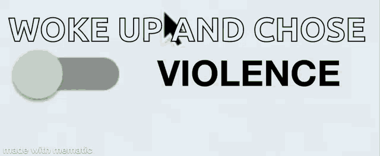
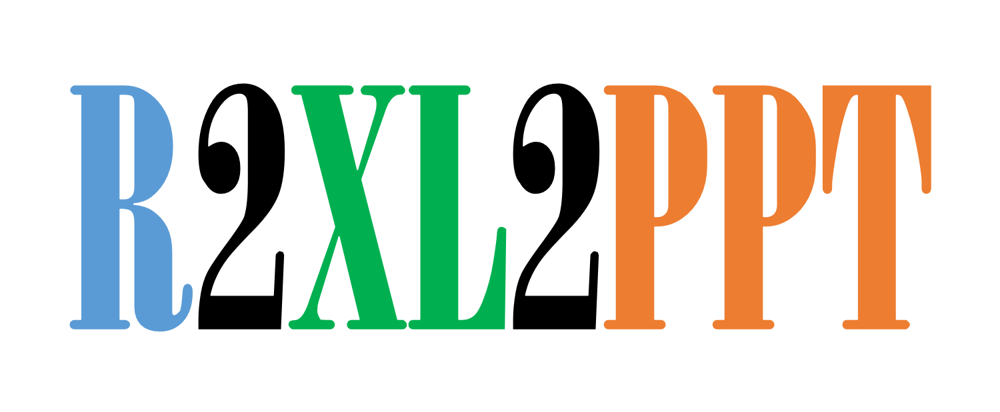

This post rants a little about how the words ‘debit’ and ‘credit’ confuse more people than they help, and then rebuilds double-entry bookkeeping from scratch as a simple, signed graph of accounts that any engineer can reason about.

This post talks about the superiority of ISO 8601 Date format and why it matters in our day-to-day life.
This post demonstrates Python’s List Comprehension compared with the for loop and its usage.
for
This post demonstrates how to use pivot_wider() to convert your long data to wide data. This is part 2 of the Pivoting your tables with Tidyr series.
pivot_wider()
This post demonstrates how to use pivot_longer() to convert your wide data to long data. This is part 1 of the Pivoting your tables with Tidyr series.
pivot_longer()
This post demonstrates some techniques to make your R user-defined functions unbreakable (well, almost!) by checking if function arguments are missing, incorrect data type or just down-right invalid values and how to return meaningful error messages.
This post demonstrates how to run VBA macros in Excel which in turn creates Presentations based off PowerPoint Templates.

This post demonstrates how to create a PowerPoint template based off your custom/corporate Presentation/Report and VBA-enabled Excel file that would populate the report.
This post demonstrates how to use the {reactable} package to create multi-level drill-down tables having hidden rows
This post demonstrates how to write your own dynamic functions using popular dplyr verbs like select(), filter(), mutate(), arrange() and group_by() with summarise().
dplyr
select()
filter()
mutate()
arrange()
group_by()
summarise()